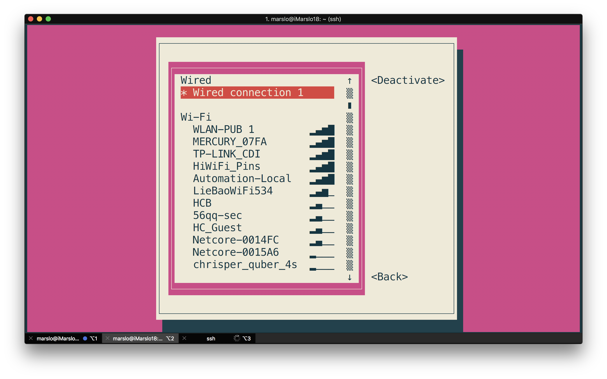
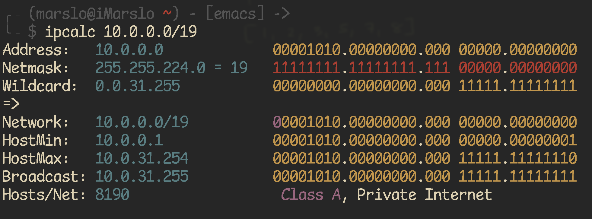
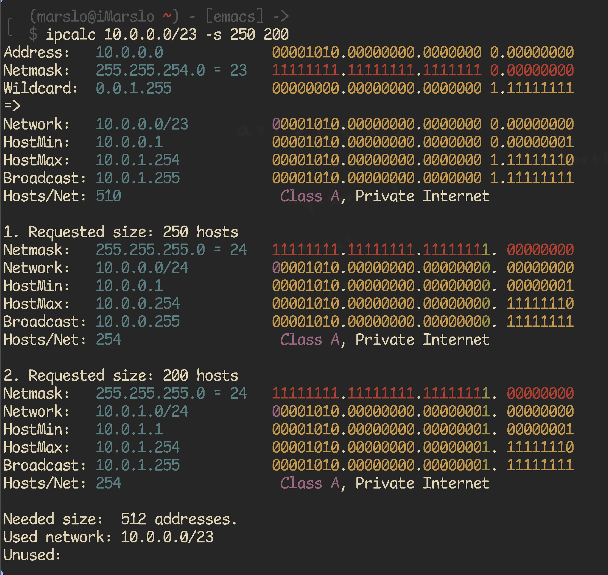
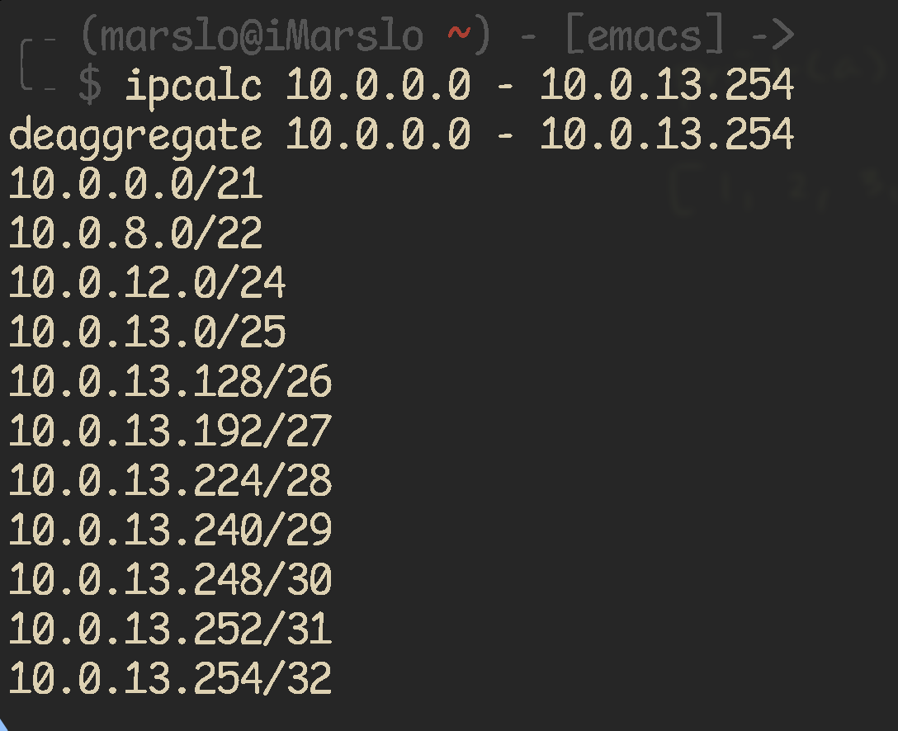

get into
[!NOTE|label:references:]
- * imarslo : osx/network
- [Ubuntu Linux view status of my network interfaces card])(https://www.cyberciti.biz/tips/ubuntu-linux-view-the-status-of-my-network-interfacescard.html)
get interface by command
$ interface=$(netstat -nr | grep -E 'UG|UGSc' | grep -E '^0.0.0|default' | grep -E '[0-9.]{7,15}' | awk -F' ' '{print $NF}')
# or get the route to github
$ interface=$(ip route get $(nslookup github.com | grep Server | awk -F' ' '{print $NF}') | sed -rn 's|.*dev\s+(\S+)\s+src.*$|\1|p')
# or
$ ip route get 1.1.1.1 | grep --color=never 'via' | sed -re 's/.+via.+dev ([0-9a-zA-Z]+) src.+$/\1/'
# or via nmcli
$ interface=$(nmcli device | grep --color=never -w connected | awk '{print $1}')
list all interfaces
$ ip l showshow active via
nmcli$ nmcli connection show --active NAME UUID TYPE DEVICE Wired connection 5 f866f67c-16db-3808-8e45-29352a730089 ethernet enx7ae71f506ee6 Wired connection 4 dc0adc36-baa3-361b-ab2d-15dd111a0e82 ethernet enp74s0get status
# with color $ ip -c route get 1.1.1.1 # without color $ ip route get 1.1.1.1 1.1.1.1 via 10.111.22.1 dev enp74s0 src 10.111.22.97 uid 1001 #-----# #---------# #-----# #----------# #target gateway interface ip address cache
get gateway
$ getway=$(route -n | grep --color=never -E 'UG|UGSc' | awk '{print $2}')
$ echo ${gateway}
10.111.22.1
get ipv4 address
$ ipAddr=$(ip a s "${interface}" | sed -rn 's|.*inet ([0-9\.]{7,15})/[0-9]{2} brd.*$|\1|p')
get ip address by hostname
-
$ ping -q -c 1 -t 1 github.com | sed -n -re 's:^PING.*\(([0-9\.]{7,15})\).*$:\1:p' -
$ dig +short github.com # or $ dig github.com | awk '/^;; ANSWER SECTION:$/ { getline ; print $5 }' nslookup$ nslookup github.com | awk '/Name:/{getline; print $2;}'
get active IP address
$ githubIP=$(dig +short github.com | head -1)
$ interface=$(ip route get ${githubIP} | sed -rn 's|.*dev\s+(\S+)\s+src.*$|\1|p')
$ ipaddr=$(ip a s ${interface} | sed -rn 's|\W*inet[^6]([0-9\.]{7,15}).*$|\1|p')
get active Mac address
$ githubIP=$(dig +short github.com | head -1)
$ interface=$(ip route get ${githubIP} | sed -rn 's|.*dev\s+(\S+)\s+src.*$|\1|p')
$ macaddr=$(ip link show ${interface} | sed -rn 's|.*ether ([0-9a-fA-F:]{17}).*$|\1|p' | sed 's|:||g' | tr [a-z] [A-Z])
dig
$ dig +noall +answer <domain.name>
get network speed
$ ifstat -n -i en7
en7
KB/s in KB/s out
7.35 1.15
4.91 1.02
6.05 0.80
8.36 1.78
check remote server dns
$ for _i in {1..10}; do
echo -e "\n\n ~~~> myserver_${i}"
ssh -q marslo@myserver_${_i} "cat /etc/resolv.conf | sed -nre 's:^nameserver\s([0-9.]+):\1:p' | xargs -L1 /usr/bin/ping -c 1"
done
show hardware spec
ethtool
$ sudo ethtool eth0
Settings for eth0:
Supported ports: [ TP ]
Supported link modes: 10baseT/Half 10baseT/Full
100baseT/Half 100baseT/Full
1000baseT/Full
Supported pause frame use: No
Supports auto-negotiation: Yes
Supported FEC modes: Not reported
Advertised link modes: 10baseT/Half 10baseT/Full
100baseT/Half 100baseT/Full
1000baseT/Full
Advertised pause frame use: No
Advertised auto-negotiation: Yes
Advertised FEC modes: Not reported
Speed: 100Mb/s
Duplex: Full
Port: Twisted Pair
PHYAD: 1
Transceiver: internal
Auto-negotiation: on
MDI-X: on (auto)
Supports Wake-on: pumbg
Wake-on: g
Current message level: 0x00000007 (7)
drv probe link
Link detected: yes
list hardware
$ sudo lshw -class network
*-network
description: Wireless interface
product: Wireless 8260
vendor: Intel Corporation
physical id: 0
bus info: pci@0000:02:00.0
logical name: wlan0
version: 3a
serial: 34:f3:9a:52:75:65
width: 64 bits
clock: 33MHz
capabilities: pm msi pciexpress bus_master cap_list ethernet physical wireless
configuration: broadcast=yes driver=iwlwifi driverversion=4.15.0-23-generic firmware=34.0.1 ip=192.168.10.235 latency=0 link=yes multicast=yes wireless=IEEE 802.11
resources: irq:129 memory:e4100000-e4101fff
*-network
description: Ethernet interface
product: Ethernet Connection (2) I219-LM
vendor: Intel Corporation
physical id: 1f.6
bus info: pci@0000:00:1f.6
logical name: eth0
version: 31
serial: 30:e1:71:95:19:bc
size: 100Mbit/s
capacity: 1Gbit/s
width: 32 bits
clock: 33MHz
capabilities: pm msi bus_master cap_list ethernet physical tp 10bt 10bt-fd 100bt 100bt-fd 1000bt-fd autonegotiation
configuration: autonegotiation=on broadcast=yes driver=e1000e driverversion=3.2.6-k duplex=full firmware=0.8-4 ip=130.147.182.57 latency=0 link=yes multicast=yes port=twisted pair speed=100Mbit/s
resources: irq:127 memory:e4300000-e431ffff
*-network:0
description: Ethernet interface
physical id: 2
logical name: veth680e7b1b
serial: 86:86:ae:b1:3f:c3
size: 10Gbit/s
capabilities: ethernet physical
configuration: autonegotiation=off broadcast=yes driver=veth driverversion=1.0 duplex=full link=yes multicast=yes port=twisted pair speed=10Gbit/s
*-network:1
description: Ethernet interface
physical id: 3
logical name: vethdd057c06
serial: ae:b1:42:e3:30:d0
size: 10Gbit/s
capabilities: ethernet physical
configuration: autonegotiation=off broadcast=yes driver=veth driverversion=1.0 duplex=full link=yes multicast=yes port=twisted pair speed=10Gbit/s
*-network:2
description: Ethernet interface
physical id: 4
logical name: vethfe693595
serial: 16:ec:cd:4e:c3:d8
size: 10Gbit/s
capabilities: ethernet physical
configuration: autonegotiation=off broadcast=yes driver=veth driverversion=1.0 duplex=full link=yes multicast=yes port=twisted pair speed=10Gbit/s
*-network:3
description: Ethernet interface
physical id: 5
logical name: flannel.1
serial: 2a:2b:77:a7:35:8f
capabilities: ethernet physical
configuration: broadcast=yes driver=vxlan driverversion=0.1 ip=10.244.0.0 link=yes multicast=yes
*-network:4
description: Ethernet interface
physical id: 6
logical name: cni0
serial: 0a:58:0a:f4:00:01
capabilities: ethernet physical
configuration: broadcast=yes driver=bridge driverversion=2.3 firmware=N/A ip=10.244.0.1 link=yes multicast=yes
*-network:5
description: Ethernet interface
physical id: 7
logical name: docker0
serial: 02:42:99:41:e5:02
capabilities: ethernet physical
configuration: broadcast=yes driver=bridge driverversion=2.3 firmware=N/A ip=172.17.0.1 link=no multicast=yes
*-network:6
description: Ethernet interface
physical id: 8
logical name: vethc1b38134
serial: 76:6a:6c:0f:e8:a1
size: 10Gbit/s
capabilities: ethernet physical
configuration: autonegotiation=off broadcast=yes driver=veth driverversion=1.0 duplex=full link=yes multicast=yes port=twisted pair speed=10Gbit/s
change interface name
Permanent Solution
$ sudo touch /etc/udev/rules.d/10-network.rules
$ sudo bash -c "cat > /etc/udev/rules.d/10-network.rules" << EOF
SUBSYSTEM=="net", ACTION=="add", DRIVERS=="?*", ATTR{address}=="<INTERFACE_MAC_ADDRESS>", KERNEL=="<ORIGINAL_INTERFACE_NAME>", NAME="<NEW_INTERFACE_NAME>"
EOF
e.g.:
$ nmcli connection NAME UUID TYPE DEVICE WLAN-PUB 2cde1f25-8c28-4318-9781-b9fcdabd985d wifi wlp2s0 Wired connection 1 f72d569d-065b-3bc8-98ae-e07f8bf46945 ethernet enp0s31f6 cni0 dcfc10c6-5421-4405-9d56-b3bb595780f5 bridge cni0 docker0 29822e8f-772f-4e67-8052-55b9e6c9e298 bridge docker0 $ sudo bash -c "cat > /etc/udev/rules.d/10-network.rules" << EOF SUBSYSTEM=="net", ACTION=="add", DRIVERS=="?*", ATTR{address}=="30:e1:71:95:19:bc", NAME="eth0" SUBSYSTEM=="net", ACTION=="add", DRIVERS=="?*", ATTR{address}=="34:f3:9a:52:75:65", NAME="wlan0" EOF $ sudo reboot $ nmcli connection NAME UUID TYPE DEVICE WLAN-PUB 2cde1f25-8c28-4318-9781-b9fcdabd985d wifi wlan0 Wired connection 1 f72d569d-065b-3bc8-98ae-e07f8bf46945 ethernet eth0 cni0 9a2d48d7-e1c7-4fe4-a164-ffde9716dbf3 bridge cni0 docker0 5db99dac-d17d-4765-9f38-057ff2c853ff bridge docker0
temporary Solution
$ sudo ifconfig <ORIGINAL_INTERFACE_NAME> down
$ sudo ip link set <ORIGINAL_INTERFACE_NAME> name <NEW_INTERFACE_NAME>
$ sudo ifconfig <NEW_INTERFACE_NAME>
e.g.:
$ nmcli dev DEVICE TYPE STATE CONNECTION wlp2s0 wifi connected WLAN-PUB cni0 bridge connected cni0 enp0s31f6 ethernet connected Wired connection 1 docker0 bridge connected docker0 flannel.1 vxlan disconnected -- veth1890b284 ethernet unmanaged -- veth5145289b ethernet unmanaged -- vetha9ee773c ethernet unmanaged -- vethf5a48bb2 ethernet unmanaged -- lo loopback unmanaged -- $ nmcli connection NAME UUID TYPE DEVICE WLAN-PUB 2cde1f25-8c28-4318-9781-b9fcdabd985d wifi wlp2s0 Wired connection 1 f72d569d-065b-3bc8-98ae-e07f8bf46945 ethernet enp0s31f6 cni0 dcfc10c6-5421-4405-9d56-b3bb595780f5 bridge cni0 docker0 29822e8f-772f-4e67-8052-55b9e6c9e298 bridge docker0 $ sudo ifconfig enp0s31f6 down; sudo ip link set enp0s31f6 name eth0; sudo ifconfig eth0 up $ nmcli dev DEVICE TYPE STATE CONNECTION wlp2s0 wifi connected WLAN-PUB cni0 bridge connected cni0 docker0 bridge connected docker0 eth0 ethernet connected Wired connection 1 flannel.1 vxlan disconnected -- veth1890b284 ethernet unmanaged -- veth5145289b ethernet unmanaged -- vetha9ee773c ethernet unmanaged -- vethf5a48bb2 ethernet unmanaged -- lo loopback unmanaged -- $ nmcli connection NAME UUID TYPE DEVICE WLAN-PUB 2cde1f25-8c28-4318-9781-b9fcdabd985d wifi wlp2s0 Wired connection 1 f72d569d-065b-3bc8-98ae-e07f8bf46945 ethernet eth0 cni0 e557e9bc-754e-4dc9-b9db-4519a7b15c33 bridge cni0 docker0 47c195b8-4867-40d3-acec-c28223e2b013 bridge docker0
nginx
[!NOTE|label:references:]
nmap
host discovery
| PARAMETER | COMMENTS |
|---|---|
-iL <inputfilename> |
Input from list of hosts/networks |
-iR <num hosts> |
Choose random targets |
-sL |
List Scan - simply list targets to scan |
-sP |
Ping Scan - go no further than determining if host is online |
-P0 |
Treat all hosts as online -- skip host discovery |
-PS/PA/PU [portlist] |
TCP SYN/ACK or UDP discovery probes to given ports |
-PE/PP/PM |
ICMP echo, timestamp, and netmask request discovery probes |
-n/-R |
Never do DNS resolution/Always resolve [default ⎮ sometimes resolve] |
-sS/sT/sA/sW/sM |
TCP SYN/Connect()/ACK/Window/Maimon scans |
-sN/sF/sX |
TCP Null, FIN, and Xmas scans |
-sO |
IP protocol scan |
-sI <zombie host[:probeport]> |
Idlescan |
-O |
Enable OS detection |
scan 80 or 22 in particular setment
$ nmap -sT -p 80 -oG - 10 - 1.2.3.* [| grep open]
$ nmap -sT -p 22 -oG - 10 - 1.2.3.* [| grep open]
OS detection with verbosity
$ sudo nmap -O -v 192.168.1.0/23
Starting Nmap 7.91 ( https://nmap.org ) at 2021-02-03 15:51 CST
Initiating ARP Ping Scan at 15:51
Scanning 511 hosts [1 port/host]
Completed ARP Ping Scan at 15:51, 2.02s elapsed (511 total hosts)
Initiating Parallel DNS resolution of 118 hosts. at 15:51
Completed Parallel DNS resolution of 118 hosts. at 15:51, 0.18s elapsed
Nmap scan report for 192.168.1.0 [host down]
Nmap scan report for 192.168.1.2 [host down]
...
Nmap scan report for 192.168.1.1
Host is up (0.0016s latency).
Not shown: 998 closed ports
PORT STATE SERVICE
22/tcp open ssh
23/tcp open telnet
MAC Address: C0:**:**:**:**:C8 (Cisco Systems)
OS details: Cisco 2950, 2960, 3550, 3560, 3750, or 4500 switch or 6500 router (IOS 12.1 - 15.0); or Adaptive Security Appliance firewall
Network Distance: 1 hop
TCP Sequence Prediction: Difficulty=264 (Good luck!)
IP ID Sequence Generation: Randomized
...
find printer
$ sudo nmap -p 9100,515,631 192.168.1.0/23 [-oX printers.xml]
...
Starting Nmap 7.91 ( https://nmap.org ) at 2021-02-03 16:09 CST
Nmap scan report for 192.168.1.191
Host is up (0.0029s latency).
PORT STATE SERVICE
515/tcp closed printer
631/tcp closed ipp
9100/tcp open jetdirect
MAC Address: 08:00:27:96:17:9E (Oracle VirtualBox virtual NIC)
Nmap done: 1 IP address (1 host up) scanned in 0.29 second
...
- or
$ sudo nmap [-sT] -p 9100,515,631 -oG - 192.168.1.0/23 # Nmap 7.91 scan initiated Wed Feb 3 16:44:20 2021 as: nmap -p 9100,515,631 -oG - 192.168.1.0/23 Host: 192.168.1.1 () Status: Up Host: 192.168.1.1 () Ports: 515/closed/tcp//printer///, 631/closed/tcp//ipp///, 9100/closed/tcp//jetdirect/// Host: 192.168.1.13 () Status: Up Host: 192.168.1.13 () Ports: 515/open/tcp//printer///, 631/open/tcp//ipp///, 9100/open/tcp//jetdirect/// Host: 192.168.1.1 () Status: Up Host: 192.168.1.1 () Ports: 515/closed/tcp//printer///, 631/closed/tcp//ipp///, 9100/closed/tcp//jetdirect/// Host: 192.168.1.254 () Status: Up Host: 192.168.1.254 () Ports: 515/filtered/tcp//printer///, 631/filtered/tcp//ipp///, 9100/filtered/tcp//jetdirect/// # Nmap done at Wed Feb 3 16:44:28 2021 -- 512 IP addresses (4 hosts up) scanned in 8.37 seconds
list hostname with mac address
$ sudo nmap -sP 172.31.201.0/24 | awk '/Nmap scan report for/{printf $5;}/MAC Address:/{print " => "$3;}' | sort
192.168.1.1 => C0:**:**:**:**:C8
192.168.1.108 => 08:**:**:**:**:6B
192.168.1.109 => 08:**:**:**:**:96
...
- get hostname, macaddress, OS
$ sudo nmap -sn 192.168.1.0/23 | awk '/Nmap scan report for/{printf $5;}/MAC Address:/{print " => "substr($0, index($0,$3)) }' | sort 192.168.1.1 => C0:**:**:**:**:C8 (Cisco Systems) 192.168.1.108 => 08:**:**:**:**:6B (Oracle VirtualBox virtual NIC) 192.168.1.109 => 08:**:**:**:**:96 (Oracle VirtualBox virtual NIC) ...
get all server up ip address
$ sudo nmap -v -sn -n 192.168.1.0/24 -oG - | awk '/Status: Up/{print $2}'
- get down
$ sudo nmap -v -sn -n 192.168.1.0/24 -oG - | awk '/Status: Down/{print $2}'
scan ip/host
$ sudo nmap -sS 1.2.3.4
Starting Nmap 7.94 ( https://nmap.org ) at 2023-08-14 22:52 PDT
Nmap scan report for host.example.com (1.2.3.4)
Host is up (0.00077s latency).
Not shown: 991 filtered tcp ports (no-response), 6 filtered tcp ports (admin-prohibited)
PORT STATE SERVICE
22/tcp open ssh
3389/tcp open ms-wbt-server
9090/tcp open zeus-admin
Nmap done: 1 IP address (1 host up) scanned in 4.98 seconds
# or
$ sudo nmap -Pn -sS --reason 1.2.3.4
Starting Nmap 7.94 ( https://nmap.org ) at 2023-08-14 23:02 PDT
Nmap scan report for host.example.com (1.2.3.4)
Host is up, received user-set (0.018s latency).
Not shown: 997 closed tcp ports (reset)
PORT STATE SERVICE REASON
22/tcp open ssh syn-ack ttl 61
111/tcp open rpcbind syn-ack ttl 61
2049/tcp open nfs syn-ack ttl 61
- trace with port
$ nmap --reason -p 16000 192.168.0.104
route
iptables
[!NOTE|label:references:]
- Linux系统运维: Iptables 应用
- How to save/backup existing iptables rules to a file – Iptables commands
- How to Backup Iptables Configuration
- What's the difference between PREROUTING and FORWARD in iptables?
$ iptables -t nat -A PREROUTING -i eth0 -p tcp --dport 80 -j REDIRECT --to-port 8080 $ iptables -A FORWARD -i eth0 -p tcp --dport 80 -d 192.168.0.4 -j ACCEPT- How to list all iptables rules with line numbers on Linux
- How To Forward Ports through a Linux Gateway with Iptables
show status
$ sudo iptables -L -nv --line-numberbackup
$ sudo iptables-save > iptables-backup-$(date +%F) # or $ sudo iptables-save > /etc/iptables/rules.v4 $ sudo ip6tables-save > /etc/iptables/rules.v6 # for ipv6 # automatic backup $ crontab -L 0 0 * * * root iptables-save > /backup/iptables-backup-$(date +%F)restore
$ sudo iptables-restore < /path/to/backup/fileflush
$ sudo iptables -F
port forwarding
[!NOTE|label:references:]
# enable forwarding is allowed
$ echo '1' | sudo tee /proc/sys/net/ipv4/conf/ppp0/forwarding
$ echo '1' | sudo tee /proc/sys/net/ipv4/conf/eth0/forwarding
# or
$ sudo sysctl net.ipv4.conf.eth0.forwarding=1
$ sudo sysctl net.ipv6.conf.eth0.forwarding=1
# or
$ cat << EOF > /etc/sysctl.d/99-forwarding.conf
sysctl net.ipv4.conf.eth0.forwarding=1
sysctl net.ipv6.conf.eth0.forwarding=1
EOF
# port forward
$ sudo iptables -t nat -A PREROUTING -p tcp -i ppp0 --dport 8001 -j DNAT --to-destination 192.168.1.200:8080
$ sudo iptables -A FORWARD -p tcp -d 192.168.1.200 --dport 8080 -m state --state NEW,ESTABLISHED,RELATED -j ACCEPT
# or https://serverfault.com/a/140624/129815
$ sudo iptables -A FORWARD -m state -p tcp -d 192.168.1.200 --dport 8080 --state NEW,ESTABLISHED,RELATED -j ACCEPT
$ sudo iptables -t nat -A PREROUTING -p tcp --dport 8001 -j DNAT --to-destination 192.168.1.200:8080
-
# PC ----- Ubuntu 10 Server ----- Slashdot # (1.2.3.4) (5.6.7.8) (216.34.181.45) # enable ip forwarding $ sudo echo 1 > /proc/sys/net/ipv4/ip_forward # add rule $ iptables -t nat -A PREROUTING -i eth0 -p tcp -m tcp --dport 8080 -j DNAT --to-destination 216.34.181.45:80 $ iptables -t nat -A POSTROUTING -o eth0 -j SNAT --to-source 5.6.7.8 # use MASQUERADE if the Ubuntu has a dynamic IP $ iptables -t nat -A POSTROUTING -j MASQUERADE # jumper server $ ssh -L 5.6.7.8:8080:216.34.181.45:80 -N user@216.34.181.45 # more config $ cat /etc/rinetd.conf 5.6.7.8 8080 216.34.181.45 80 $ /etc/init.d/rinetd start # iptable-save *nat -A PREROUTING -p tcp -m tcp -i eth0 --dport 8080 -j DNAT --to-destination 216.34.181.45:80 -A POSTROUTING -o eth0 -j SNAT --to-source 5.6.7.8 COMMIT -
#!/bin/bash # decide which action to use action="add" if [[ "-r" == "$1" ]]; then action="remove" shift fi # break out components dest_addr_lan="$1" dest_port_wan="$2" dest_port_lan="$3" # figure out our WAN ip wan_addr=`curl -4 -s icanhazip.com` # auto fill our dest lan port if we need to if [ -z $dest_port_lan ]; then dest_port_lan="$dest_port_wan" fi # print info for review echo "Destination LAN Address: $dest_addr_lan" echo "Destination Port WAN: $dest_port_wan" echo "Destination Port LAN: $dest_port_lan" echo "WAN Address: $wan_addr" # confirm with user read -p "Does everything look correct? " -n 1 -r echo # (optional) move to a new line if [[ $REPLY =~ ^[Yy]$ ]]; then if [[ "remove" == "$action" ]]; then iptables -t nat -D PREROUTING -p tcp -m tcp -d $wan_addr --dport $dest_port_wan -j DNAT --to-destination $dest_addr_lan:$dest_port_lan iptables -D FORWARD -m state -p tcp -d $dest_addr_lan --dport $dest_port_lan --state NEW,ESTABLISHED,RELATED -j ACCEPT iptables -t nat -D POSTROUTING -p tcp -m tcp -s $dest_addr_lan --sport $dest_port_lan -j SNAT --to-source $wan_addr echo "Forwarding rule removed" else iptables -t nat -A PREROUTING -p tcp -m tcp -d $wan_addr --dport $dest_port_wan -j DNAT --to-destination $dest_addr_lan:$dest_port_lan iptables -A FORWARD -m state -p tcp -d $dest_addr_lan --dport $dest_port_lan --state NEW,ESTABLISHED,RELATED -j ACCEPT iptables -t nat -A POSTROUTING -p tcp -m tcp -s $dest_addr_lan --sport $dest_port_lan -j SNAT --to-source $wan_addr echo "Forwarding rule added" fi else echo "Info not confirmed, exiting..." fi
port redirection
$ sudo iptables -L -n
Chain INPUT (policy ACCEPT)
target prot opt source destination
Chain FORWARD (policy ACCEPT)
target prot opt source destination
Chain OUTPUT (policy ACCEPT)
target prot opt source destination
$ sudo iptables -I INPUT 1 -p tcp --dport 8080 -j ACCEPT
$ sudo iptables -I INPUT 1 -p tcp --dport 80 -j ACCEPT
$ sudo iptables -A PREROUTING -t nat -i ens32 -p tcp --dport 80 -j REDIRECT --to-port 8080
$ sudo iptables -t nat -I OUTPUT -p tcp -d 127.0.0.1 --dport 80 -j REDIRECT --to-ports 8080
$ sudo iptables -t nat -I OUTPUT -p tcp -o lo --dport 80 -j REDIRECT --to-ports 8080
$ sudo iptables -L -n
Chain INPUT (policy ACCEPT)
target prot opt source destination
ACCEPT tcp -- 0.0.0.0/0 0.0.0.0/0 tcp dpt:80
ACCEPT tcp -- 0.0.0.0/0 0.0.0.0/0 tcp dpt:8080
Chain FORWARD (policy ACCEPT)
target prot opt source destination
Chain OUTPUT (policy ACCEPT)
target prot opt source destination
$ sudo netfilter-persistent save
run-parts: executing /usr/share/netfilter-persistent/plugins.d/15-ip4tables save
run-parts: executing /usr/share/netfilter-persistent/plugins.d/25-ip6tables save
$ sudo iptables-save > /etc/iptables/rules.v4
nslookup
$ nslookup sample.gitlab.com
Server: 130.147.236.5
Address: 130.147.236.5#53
Non-authoritative answer:
Name: sample.gitlab.com
Address: 130.147.219.15
$ ip route get 130.147.219.15
130.147.219.15 dev eno1 src 130.147.182.240 uid 1000
cache
$ nslookup github.com
Server: 130.147.236.5
Address: 130.147.236.5#53
Non-authoritative answer:
Name: github.com
Address: 192.30.253.112
Name: github.com
Address: 192.30.253.113
$ ip route get 192.30.253.113
192.30.253.113 via 192.168.10.1 dev wlan0 src 192.168.11.166 uid 1000
cache
or
$ ip route show default via 192.168.10.1 dev wlan0 proto dhcp metric 600 10.244.0.0/24 dev cni0 proto kernel scope link src 10.244.0.1 130.140.0.0/16 dev eth0 scope link 130.145.0.0/16 dev eth0 scope link 130.146.0.0/16 dev eth0 scope link 130.147.0.0/16 dev eth0 scope link 130.147.182.0/23 dev eth0 proto kernel scope link src 130.147.182.57 metric 100 137.55.0.0/16 dev eth0 scope link 161.83.0.0/16 dev eth0 scope link 161.84.0.0/16 dev eth0 scope link 161.85.0.0/16 dev eth0 scope link 161.88.0.0/16 dev eth0 scope link 161.91.0.0/16 dev eth0 scope link 161.92.0.0/16 dev eth0 scope link 169.254.0.0/16 dev eth0 scope link metric 1000 172.17.0.0/16 dev docker0 proto kernel scope link src 172.17.0.1 linkdown 185.166.0.0/16 dev eth0 scope link 192.168.10.0/23 dev wlan0 proto kernel scope link src 192.168.10.235 metric 600or
$ route -n Kernel IP routing table Destination Gateway Genmask Flags Metric Ref Use Iface 0.0.0.0 192.168.10.1 0.0.0.0 UG 600 0 0 wlan0 10.244.0.0 0.0.0.0 255.255.255.0 U 0 0 0 cni0 130.140.0.0 0.0.0.0 255.255.0.0 U 0 0 0 eth0 130.145.0.0 0.0.0.0 255.255.0.0 U 0 0 0 eth0 130.146.0.0 0.0.0.0 255.255.0.0 U 0 0 0 eth0 130.147.0.0 0.0.0.0 255.255.0.0 U 0 0 0 eth0 130.147.182.0 0.0.0.0 255.255.254.0 U 100 0 0 eth0 137.55.0.0 0.0.0.0 255.255.0.0 U 0 0 0 eth0 161.83.0.0 0.0.0.0 255.255.0.0 U 0 0 0 eth0 161.84.0.0 0.0.0.0 255.255.0.0 U 0 0 0 eth0 161.85.0.0 0.0.0.0 255.255.0.0 U 0 0 0 eth0 161.88.0.0 0.0.0.0 255.255.0.0 U 0 0 0 eth0 161.91.0.0 0.0.0.0 255.255.0.0 U 0 0 0 eth0 161.92.0.0 0.0.0.0 255.255.0.0 U 0 0 0 eth0 169.254.0.0 0.0.0.0 255.255.0.0 U 1000 0 0 eth0 172.17.0.0 0.0.0.0 255.255.0.0 U 0 0 0 docker0 185.166.0.0 0.0.0.0 255.255.0.0 U 0 0 0 eth0 192.168.10.0 0.0.0.0 255.255.254.0 U 600 0 0 wlan0
traceroute
[!NOTE|label:references:]
- How does traceroute -T -p work?
- What does "!Z" and "!X" mean in a traceroute?
!Xmeans "communication administratively prohibited"`!Zmeans "communication with destination host administratively prohibited"Since Linux uses UDP for trace-routes, this can originate from a `--reject-with icmp-host-prohibited` To fix this you need to reply with `--reject-with icmp-port-unreachable` on UDP ports 33434 through 33534- How to open and close ports on RHEL 8 / CentOS 8 Linux
- How To Set Up a Firewall Using firewalld on CentOS 8
- How to stop/start firewall on RHEL 8 / CentOS 8
- How To Fix “No Route To Host” In Linux
traceroute for port
## before firewall open the port 2376
$ sudo traceroute -T -p 2376 1.2.3.4
traceroute to 1.2.3.4 (1.2.3.4), 30 hops max, 60 byte packets
1 _gateway (127.0.0.1) 0.624 ms 0.603 ms 0.594 ms
6 host.example.com (1.2.3.4) 14.750 ms !X 14.682 ms !X 23.138 ms !X
## after firewall open the port 2376
$ sudo traceroute -T -p 2376 1.2.3.4
traceroute to 1.2.3.4 (1.2.3.4), 30 hops max, 60 byte packets
1 _gateway (127.0.0.1) 0.346 ms 0.316 ms 0.310 ms
6 host.example.com (1.2.3.4) 23.093 ms 14.725 ms 14.625 ms
No route to host
[!NOTE|label:references:]
$ nc -zv 1.2.3.4 2376
nc: connect to 1.2.3.4 port 2376 (tcp) failed: No route to host
$ traceroute 1.2.3.4
traceroute to 1.2.3.4 (1.2.3.4), 30 hops max, 60 byte packets
1 _gateway (127.0.0.1) 0.569 ms 0.539 ms 2.512 ms
2 host.example.com (1.2.3.4) 23.582 ms !X 23.486 ms !X 15.065 ms !X
# ^ ^ ^
# communication administratively prohibited
check firewall status
$ ssh 1.2.3.4 $ sudo firewall-cmd --state running $ sudo firewall-cmd --list-all public (active) target: default icmp-block-inversion: no interfaces: enp74s0 sources: services: cockpit dhcpv6-client ssh ports: 3389/tcp protocols: forward: no masquerade: no forward-ports: source-ports: icmp-blocks: rich rules: $ sudo firewall-cmd --zone=public --list-ports 3389/tcpenable port
$ sudo firewall-cmd --zone=public --permanent --add-port 2376/tcp success $ sudo firewall-cmd --zone=public --list-ports 3389/tcp $ sudo firewall-cmd --reload success $ sudo firewall-cmd --zone=public --list-ports 2376/tcp 3389/tcpverify
$ nc -zv 1.2.3.4 2376 Connection to 1.2.3.4 2376 port [tcp/docker-s] succeeded! $ docker -H tcp://1.2.3.4:2376 images REPOSITORY TAG IMAGE ID CREATED SIZE ubuntu 18.04 71cb16d32be4 10 months ago 63.1MBother usage
# get $ firewall-cmd --list-all $ firewall-cmd --get-default-zone $ firewall-cmd --get-active-zones $ sudo firewall-cmd --list-all-zones | less $ sudo firewall-cmd --zone=public --list-all $ sudo firewall-cmd --zone=public --list-services $ sudo firewall-cmd --zone=public --change-interface=eth0 $ firewall-cmd --get-zones $ firewall-cmd --get-services $ sudo firewall-cmd --runtime-to-permanent # add $ sudo firewall-cmd --zone=public --add-service=http $ sudo firewall-cmd --zone=public --add-service=http --permanent $ sudo firewall-cmd --zone=public --add-port 8080/tcp --permanent # remove $ sudo firewall-cmd --zone=public --permanent --remove-port 2376/tcp $ sudo firewall-cmd --reloadadd ip range
[!NOTE|label:references:]
# all ports for ip range $ sudo firewall-cmd --zone=trusted --add-source=64.39.96.0/20 # limited ports for ip range $ firewall-cmd --new-zone=special --permanent $ firewall-cmd --reload $ firewall-cmd --zone=special --add-source=192.0.2.4/32 $ firewall-cmd --zone=special --add-port=4567/tcp # or rich rule $ firewall-cmd --permanent --zone=public --add-rich-rule=' rule family="ipv4" source address="1.2.3.4/32" port protocol="tcp" port="4567" accept'
possibly impacted
$ echo 1 | sudo tee /proc/sys/net/ipv4/ip_forward $ sudo sysctl -w net.ipv4.conf.all.route_localnet=1
DNS
add new DNS permanently
$ sudo apt install resolvconf
$ sudo cp /etc/resolvconf/resolv.conf.d/head{,.org}
$ sudo bash -c "cat > /etc/resolvconf/resolv.conf.d/head" << EOF
nameserver 130.147.236.5
nameserver 161.92.35.78
search cn-132.lan.sample.com
EOF
$ sudo resolvconf -u
$ cat /etc/resolv.conf
nameserver 127.0.0.53
$ sudo resolvconf -u
$ cat /etc/resolv.conf
nameserver 130.147.236.5
nameserver 161.92.35.78
nameserver 127.0.0.53
search cn-132.lan.sample.com
wifi
iwconfig
installation
$ sudo apt install wireless-toolsget wireless card
$ WIRELESSCARD="$(iwconfig 2>/dev/null | /bin/grep ESSID | awk -F' ' '{print $1}')" $ iwconfig 2>/dev/null | \grep ESSID wlx24050f15c19b IEEE 802.11 ESSID:"MERCURY_07FA"wireless network details
$ sudo iwlist scan docker0 Interface doesn't support scanning. eno1 Interface doesn't support scanning. lo Interface doesn't support scanning. cni0 Interface doesn't support scanning. flannel.1 Interface doesnt support scanning. wlx24050f15c19b Scan completed : Cell 01 - Address: 50:3A:A0:CB:07:FA Channel:1 Frequency:2.412 GHz (Channel 1) Quality=55/70 Signal level=-55 dBm Encryption key:on ESSID:"MERCURY_07FA" Bit Rates:1 Mb/s; 2 Mb/s; 5.5 Mb/s; 11 Mb/s; 9 Mb/s 18 Mb/s; 36 Mb/s; 54 Mb/s Bit Rates:6 Mb/s; 12 Mb/s; 24 Mb/s; 48 Mb/s Mode:Master ...or
$ nmcli --show-secrets connection show 'MERCURY_07FA' connection.id: MERCURY_07FA connection.uuid: 8e362f4a-d3a3-4147-b31e-4519954b55ef connection.stable-id: -- connection.type: 802-11-wireless connection.interface-name: -- connection.autoconnect: yes connection.autoconnect-priority: 0 connection.autoconnect-retries: -1 (default) connection.auth-retries: -1 connection.timestamp: 1530689982 connection.read-only: no ...
nmcli
- show available wifi
$ sudo nmcli device wifi rescan $ nmcli dev wifi list IN-USE SSID MODE CHAN RATE SIGNAL BARS SECURITY CDI_TP-LINK Infra 11 405 Mbit/s 100 ▂▄▆█ WPA1 WPA2 TP-LINK_CDI Infra 1 270 Mbit/s 82 ▂▄▆█ WPA1 WPA2 WLAN-PUB Infra 4 54 Mbit/s 82 ▂▄▆█ WPA1 WPA2 HiWiFi_Pins Infra 7 270 Mbit/s 82 ▂▄▆█ WPA1 WPA2 -- Infra 1 54 Mbit/s 59 ▂▄▆_ -- * MERCURY_07FA Infra 1 270 Mbit/s 55 ▂▄__ WPA1 WPA2 Automation-Local Infra 9 195 Mbit/s 55 ▂▄__ WPA2 ChinaUnicom Infra 1 54 Mbit/s 42 ▂▄__ -- 61-PUB Infra 1 270 Mbit/s 29 ▂___ WPA2 HC_Guest Infra 6 405 Mbit/s 29 ▂___ WPA1 WPA2 HuaCloud_AP Infra 6 405 Mbit/s 29 ▂___ WPA1 WPA2 56qq-guest Infra 6 195 Mbit/s 25 ▂___ WPA2 56qq-sec Infra 1 195 Mbit/s 22 ▂___ WPA2 802.1X 56qq-guest Infra 1 195 Mbit/s 22 ▂___ WPA2 HCB Infra 1 195 Mbit/s 19 ▂___ WPA2 802.1X

- show saved wifi list
$ nmcli c ( = $ nmcli connection) NAME UUID TYPE DEVICE WLAN-PUB 545d5d95-723f-4e1b-b764-8e9bd2fe6a9f wifi wlp2s0 Wired connection 1 a2a10a61-4519-3380-9301-c6e2a592eaa7 ethernet enp0s31f6 CDI_TP-LINK_5G cb00cf00-58ca-4668-9b4c-e1fb3b18c932 wifi --
nmtui

netmask
[!NOTE|label:references:]
conversion
[!NOTE|label:references:]
- * iMarslo : math : binary <> decimal <> hexadecimal
obase:[o]utput baseibase:[i]utput base
# bin -> dec
$ bc <<< 'ibase=2;11111111;11111111;11000000;00000000' | paste -sd. -
255.255.192.0
# bin -> hex
$ bc <<< 'obase=16;ibase=2;11111111;11111111;11000000;00000000' | awk '{ printf "%04s\n", $1 }' | paste -sd. -
00FF.00FF.00C0.0000
# dec -> bin
$ bc <<< 'ibase=10;obase=2;255;255;240;0' | numfmt --format %08f | paste -sd' ' -
11111111 11111111 11110000 00000000
# dec -> hex
$ bc <<< 'ibase=10;obase=16;255;255;240;0' | awk '{ printf "%04s\n", $1 }' | paste -sd. -
00FF.00FF.00F0.0000
# hex -> bin
$ bc <<< 'ibase=16;obase=2;FF;FF;EE;0A' | numfmt --format %08f | paste -sd' ' -
11111111 11111111 11101110 00001010
# hex -> dec
$ bc <<< 'ibase=16;FF;FF;EE;0A' | paste -sd. -
255.255.238.10
basic concept
[!TIP|label:what is netmask] A netmask is a
32-bitbinary mask used to divide an IP address into subnets and specify the network's available hosts.
- full 32-bit :
11111111 11111111 11111111 11111111 # |------| |------| |------| |------| # 8 + 8 + 8 + 8 == total 32-bit- sample data:
- ip address:
10.0.0.0
24-bit
=1x8x3+0x8bit
=11111111111111111111111100000000- wildcard
=00000000000000000000000011111111=0x8x3+1x8bit
=2^8 - 1
=255
= support 255 IPs maximum including boardcast
= support255-1regular IPs
==>
- network :
10.0.0.0/24 - hostMin :
10.0.0.1 - hostMax :
10.0.0.254 - boardcast :
10.0.0.254 - host/net :
254
example
if netmask using n-bit, then supported hosts/nets = 2^(32-<n>) - 1 - 1. i.e.:
- netmask :
27 - supported IPs :
2^(32-27) - 1 - 1=2^5 - 1 - 1=32 - 2=30 - IP ranges :
10.0.0.1 ~ 10.0.0.30 - boardcast :
10.0.0.31
if netmask using 255.255.x.x
convert netmask decimal to binary, and get bit and then get wildcard. i.e.:
- netmask :
255.255.255.192 decimal to binary :
[!TIP]
$ bc -l <<< 'obase=2;255;255;192;0' | awk '{ printf "%08d\n", $0 }' | xargs 11111111 11111111 11000000 00000000 $ bc -l <<< 'obase=2;255;255;192;0' | numfmt --format=%08f | xargs 11111111 11111111 11000000 00000000192
=128+64
=2^7+2^6
=10000000 + 01000000
- netmask :
255 . 255 . 255 . 192
=
11111111 11111111 11111111 11000000
|---------------------------|
26-bit1x3x8+1x2+0x6=26 - wildcard :
0 . 0 . 0 . 63
=
00000000 00000000 00000000 00111111
|----|
6-bit0x3x8+0x2+1x6=6===32 - 26=6 - IPs :
2^6 - 1 - 1=64 - 2=62=10.0.0.1 ~ 10.0.0.62 - boardcast :
10.0.0.63
- netmask :
255.255.255.255 - <netmask>, and then convert decimal to binary- netmask :
255.255.240.0 wildcard :
[!TIP]
$ bc -l <<< 'obase=2;0;0;15;255' | awk '{ printf "%08d\n", $0 }' | xargs 00000000 00000000 00001111 11111111 $ bc <<< 'obase=2; 0;0;15;255' | numfmt --format=%08f | xargs 00000000 00000000 00001111 11111111255.255.255.255 - 255.255.240.0=0.0.15.255=0 . 0 . 15 . 255
00000000 00000000 00001111 11111111
|-----------|
12-bit- IPs :
2^12 - 1 - 1=4094=10.0.0.1 ~ 10.0.0.15.254
--
0.0.15.255 # 255.255.255.255 - 255.255.240.0 = 0.0.15.255 - boardcast :
10.0.15.255
- netmask :
netmask quick reference
| # BITS | # HOSTS | NETMASK | CLASS |
|---|---|---|---|
/4 |
268435456 |
240.0.0.0 |
A |
/5 |
134217728 |
248.0.0.0 |
A |
/6 |
67108864 |
252.0.0.0 |
A |
/7 |
33554432 |
254.0.0.0 |
A |
/8 |
16777216 |
255.0.0.0 |
A |
/9 |
8388608 |
255.128.0.0 |
B |
/10 |
4194304 |
255.192.0.0 |
B |
/11 |
2097152 |
255.224.0.0 |
B |
/12 |
1048576 |
255.240.0.0 |
B |
/13 |
524288 |
255.248.0.0 |
B |
/14 |
262144 |
255.252.0.0 |
B |
/15 |
131072 |
255.254.0.0 |
B |
/16 |
65536 |
255.255.0.0 |
B |
/17 |
32768 |
255.255.128.0 |
C |
/18 |
16384 |
255.255.192.0 |
C |
/19 |
8192 |
255.255.224.0 |
C |
/20 |
4096 |
255.255.240.0 |
C |
/21 |
2048 |
255.255.248.0 |
C |
/22 |
1024 |
255.255.252.0 |
C |
/23 |
512 |
255.255.254.0 |
C |
/24 |
256 |
255.255.255.0 |
C |
/25 |
128 |
255.255.255.128 |
- |
/26 |
64 |
255.255.255.192 |
- |
/27 |
32 |
255.255.255.224 |
- |
/28 |
16 |
255.255.255.240 |
- |
/29 |
8 |
255.255.255.248 |
- |
/30 |
4 |
255.255.255.252 |
- |
/31 |
- | - | - |
/32 |
1 |
255.255.255.255 |
- |
ipcalc
[!NOTE|label:references:]
basic usage
 1.8.5.3 -- network detials split network to subnets
 1.8.5.4 -- split to subnets deaggregate address range
 1.8.5.5 -- ip range